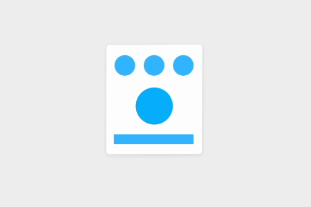
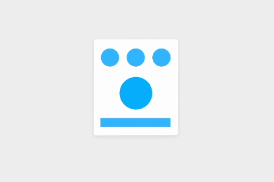
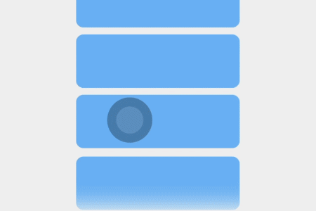
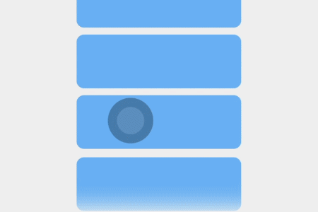
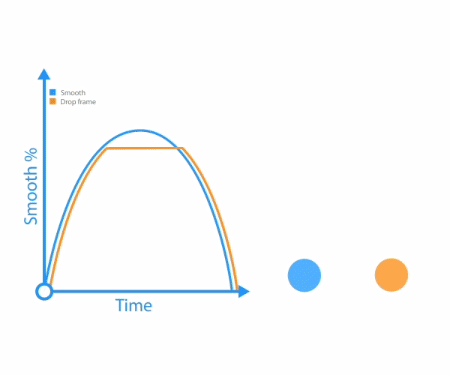
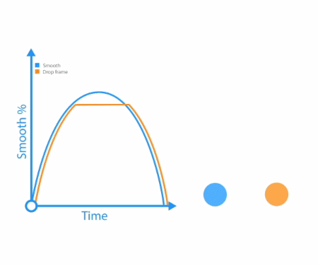
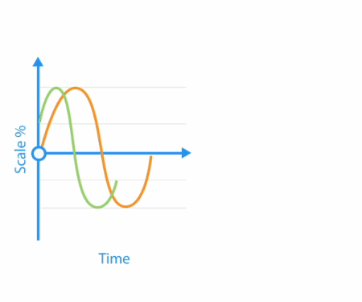
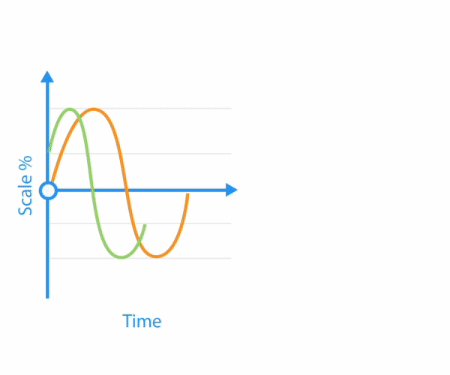
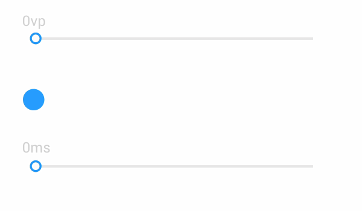
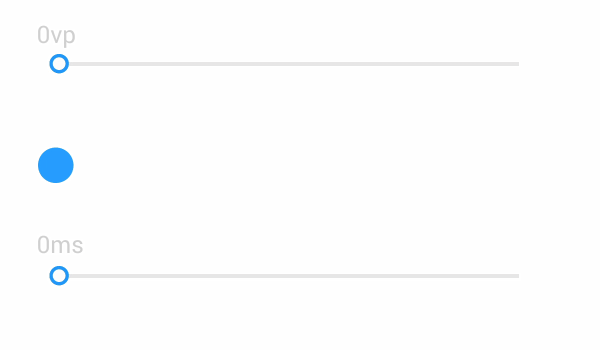

1 UX动效设计
1.1 UX动效设计
人因x动效
力的既视感
- 将力赋予元素
- 直观地传递出形象化、拟物化、动态化
图1-2

力的秩序感
- 有序的、一致的、节奏的运动能够创造更强的秩序感
- 秩序感更容易引起用户注意力
- 秩序感对转场元素的运动编排尤为重要
图1-3


力的控制感
- 摩擦力、重力、斥力在交互界面中以操作的方式被感知
- 力的传递与心理预期产生呼应
- 元素通过速度或节奏等，传达出仿真物理世界的感受
图1-4


自然流畅
- 流畅性是人对加工信息难易程度的一种主观体验
- 三者合一：手势触控、视觉感知、心理预期
- 基础要求：帧率稳定、响应及时、跟手操作
图1-5


高效快速
- 界面元素运动尽可能少且简洁
- 长距离保持在350ms内
- 短距离保持在250ms内
- 较短的动画保持在150ms内完成动作
图1-6


运动一致
- 在动作编排时应遵循运动路径方式一致
- 不一致的运动会分散用户视觉焦点
- 运用适当的编排手法，引导用户聚焦操作任务
图1-7

